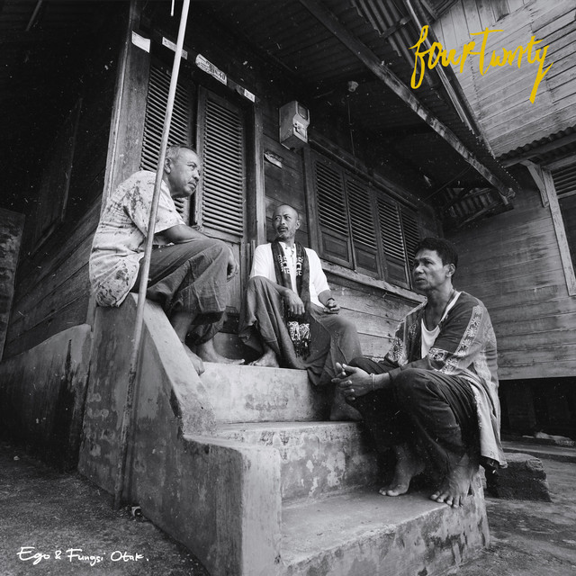

Suasana hati tak selamanya tertata rapi. Kadang penuh sukacita,
kadang nestapa menyapa. Begitu halnya band Fourtwnty sempat takluk
dalam ego masing-masing ketika mereka dalam perjuangan merampungkan album kedua.
Ada hal berbeda dirasakan band yang digawangi Ari, Nuwi, dan Roots ini saat waktu
mengharuskan mereka bertemu untuk menggarap album kedua di studio. Menjalani rutinitas
yang tidak lagi sama memperparah atmosfer yang seharusnya jadi wadah bertukar gagasan karya terbaru.
Album Ego & Fungsi Otak By:
| Name Artist | : | Fourtwnty |
| Year | : | 2018 |
| Origin | : | Palembang, Indonesia |
List Song:
- Segelas Berdua
- Kusut
- Realita
- Kita Pasti Tua
- Zona Nyaman
- Nyanyian Surau
- Trilogi
Album Price: Rp.500,000